DATASET
OVERVIEW
100,000 Rows × 22 Columns
실습 1: 리테일 일일 매출 예측 (Tabular ML)
Tutorial 1: Retail Daily Sales Forecast (Tabular ML)
본 실습에서는 전국 100개 매장의 10만 건 리테일 데이터를 바탕으로 일일
매출액(daily_sales)을 예측하는 회귀(Value Prediction) 모델을 노코드로 완성합니다.
This tutorial guides you through building a regression (Value
Prediction) model to forecast daily sales (daily_sales) across 100
retail stores with 100,000 records without coding.
📁 File Info
retail_sales_forecast_100k_en.csv (UTF-8-BOM)
🎯 Target Variable (Y)
daily_sales (일일 매출액)
🏢 Store & Market
store_type, location_type, store_size_m2, competitor_count
📅 Time & Calendar
year, month, day, day_of_week, is_weekend, is_holiday
🏷️ Marketing & Promo
is_promotion, avg_discount_rate, online_pickup_ratio,
member_ratio
🌦️ External Environment
temperature, rainfall_mm, cpi_index (*결측치 포함)
01
PROJECT
SETUP
새 프로젝트 생성하기 (New Project)
Create a New Project
KASTLE을 실행한 후 화면 상단의 [+] 버튼을 눌러 새 분석 프로젝트를 생성합니다.
생성된 프로젝트의 이름을 더블클릭하여 직관적인 이름으로 변경할 수 있습니다.
Launch KASTLE and click the [+] button to create a
new project. Double-click the created project name to rename it.
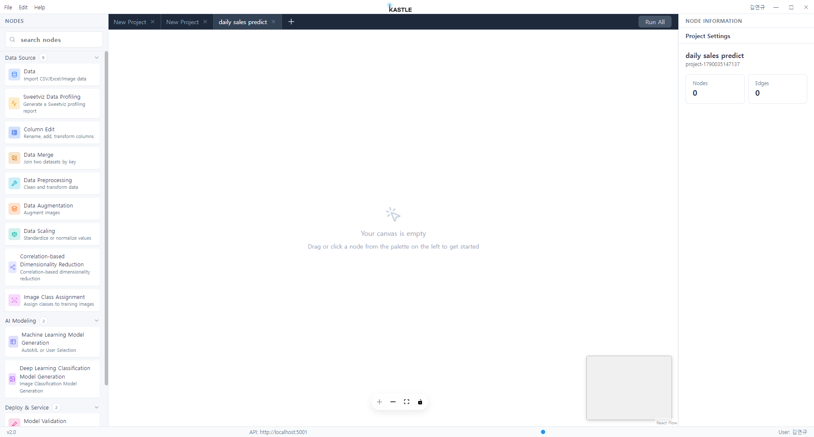
Click [+] to Add Project
🔍 Zoom
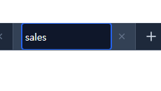
Double-click to Rename
🔍 Zoom
02
DATA
IMPORT
정형 데이터셋 로드 (Data Load)
Load Tabular Dataset
좌측 노드 패널에서 Data 노드를 캔버스로 드래그 앤 드롭합니다. 이번 예제는 CSV
파일이므로 Tabular Data를 선택하고, [Select File]을 눌러
retail_sales_forecast_100k_en.csv를 선택한 뒤 [Save & Run]을
클릭하여 데이터를 불러옵니다.
Drag and drop the Data node onto the canvas. Select
Tabular Data, click [Select File] to choose the
CSV file, and click [Save & Run] to import the dataset.
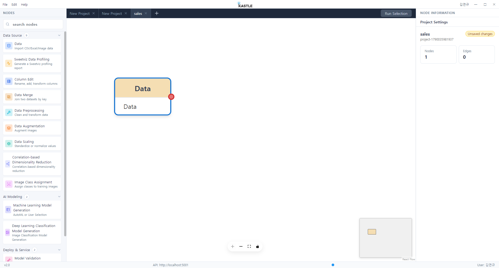
Add Data Node to Canvas
🔍 Zoom
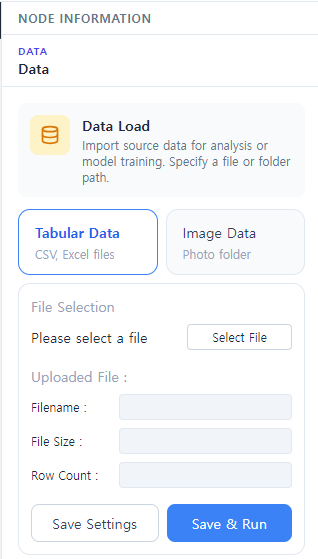
Tabular Data -> [Save & Run]
🔍 Zoom
03
EDA &
PROFILING
데이터 자동 탐색 및 프로파일링 (Sweetviz)
Automated Data Profiling with Sweetviz
데이터의 분포, 결측치 비율, 피처 간 상관관계를 한눈에 확인하기 위해 Sweetviz Data
Profiling 노드를 추가하고 Data 노드와 연결합니다. 우측 패널의 [View
Report] 버튼을 누르면 대화형 EDA 보고서가 즉시 열립니다.
Connect a Sweetviz Data Profiling node to inspect
distributions, missing ratios, and correlations. Click [View
Report] on the right panel to examine the generated interactive
report.
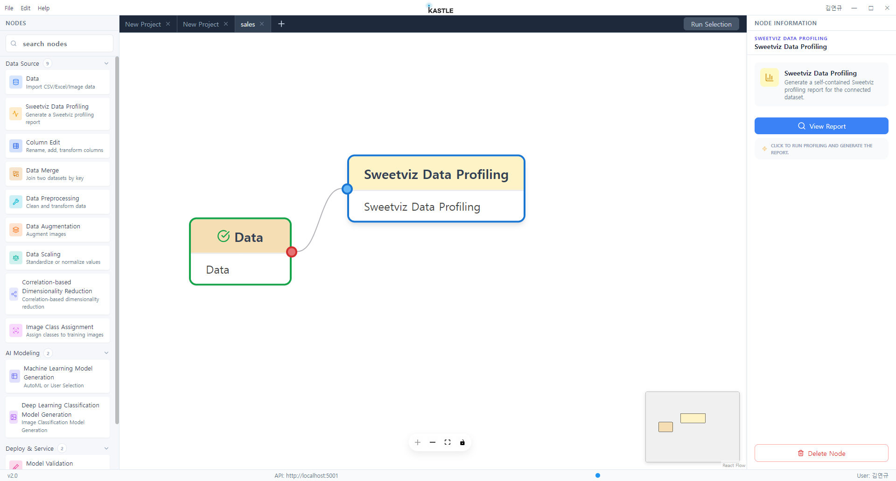
Connect Sweetviz Node
🔍 Zoom
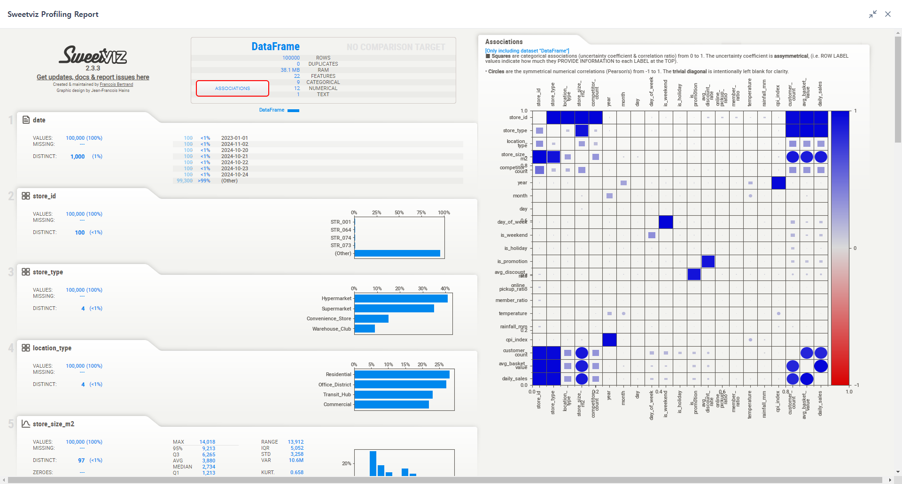
Interactive EDA Report
🔍 Zoom
04
PREPROCESSING
결측치 처리 및 인코딩 (Data Preprocessing)
Imputation, Outlier Removal & Encoding
Data Preprocessing 노드를 추가하여 Data 노드와 연결합니다. 결측치 대치,
이상치 제거, 텍스트 범주형 데이터의 수치 변환을 클릭 몇 번으로 설정합니다.
Add a Data Preprocessing node and connect it to the
Data node. Easily configure missing value imputation, outlier elimination, and text
encoding.
1. Missing Values
- • Fill with Mean: 평균값 대치
- • Fill with Median: 중앙값 대치
- • Drop Rows: 결측치 행 제거
2. Outlier
Removal
통계적 이상치를 자동으로 감지하고 안전하게 제거하여 모델 왜곡을 방지합니다.
3. Text to Number
- • Ordinal: 고유값 순차 정수 매핑
- • One-hot: 이진(0/1) 지시자 컬럼 생성
- • No Conversion: 원본 유지
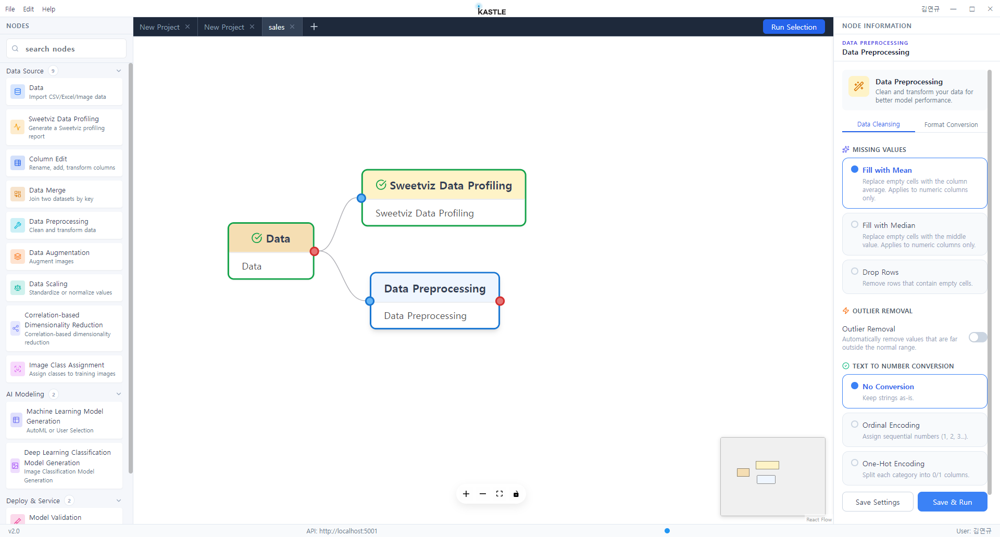
Connect Node
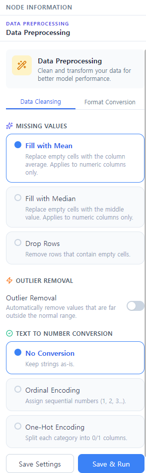
Imputation Setup
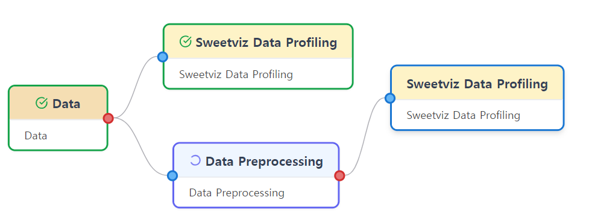
Encoding Setup
05
AUTO
PILOT AUTOML
머신러닝 모델 생성 & 최적화 (Auto Pilot)
ML Model Generation & Auto Pilot
Machine Learning Model Generation 노드를 추가하여
Preprocessing 노드에 연결합니다. 본 프로젝트는 매출 예측이므로 Value Prediction을 선택하고,
Target Column으로 daily_sales를 지정합니다. Algorithm Optimization에서
Auto Pilot을 선택하면 다수의 머신러닝 알고리즘 중 최적의 모델과 하이퍼파라미터를 자동으로
학습·탐색합니다.
Add a Machine Learning Model Generation node and
connect it to the Preprocessing node. Select Value Prediction, set
daily_sales as Target Column, and choose Auto Pilot
for automated AutoML optimization.
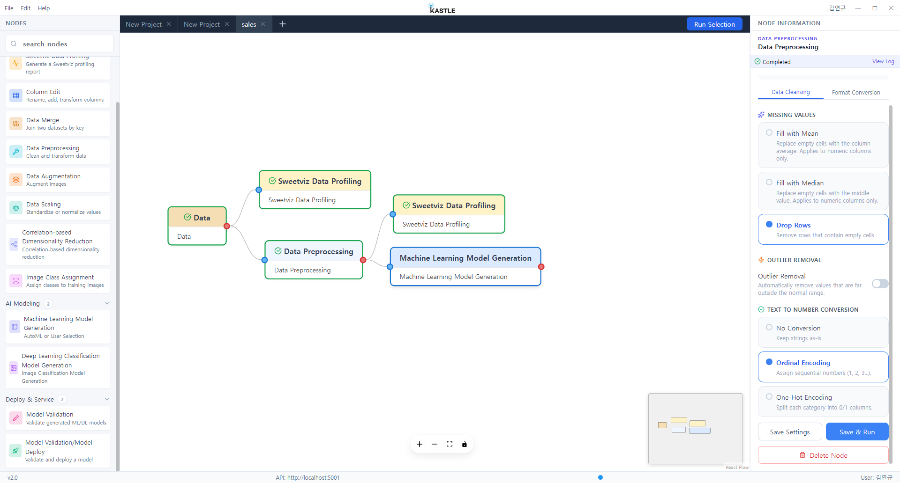
Target: daily_sales
🔍 Zoom
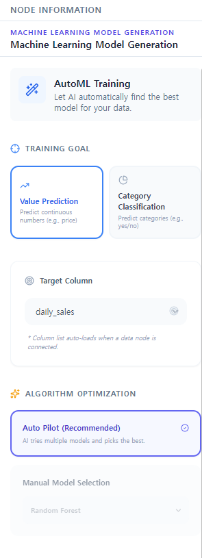
Algorithm: Auto Pilot (AutoML)
🔍 Zoom
06
VALIDATION
& INFERENCE
모델 실시간 검증 및 추론 (Model Validation)
Interactive Model Validation & Inference
생성된 모델 노드에 Model Validation 노드를 연결합니다(Model Type은
Tabular로 자동 지정). 우측 패널의 [Open Validation Tool]을 클릭하여 검증 도구를 열고, 각
변수(store_size, 할인율, 기온 등)에 원하는 값을 입력한 후 [Run Model Validation]을 누르면
모델이 추론한 예상 일일 매출액이 즉시 출력됩니다.
Connect a Model Validation node (defaults to
Tabular). Click [Open Validation Tool], enter feature values in the
form, and click [Run Model Validation] to view real-time predicted
daily sales.
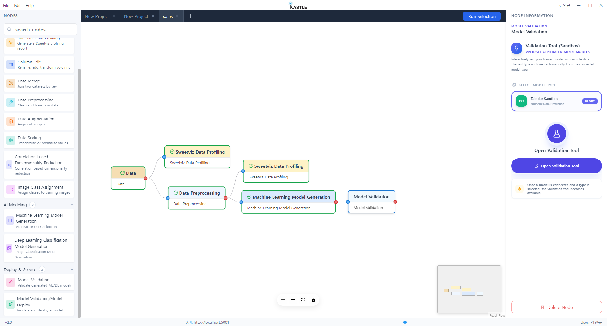
Connect Validation Node
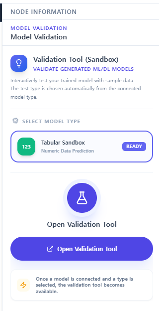
[Open Validation Tool]
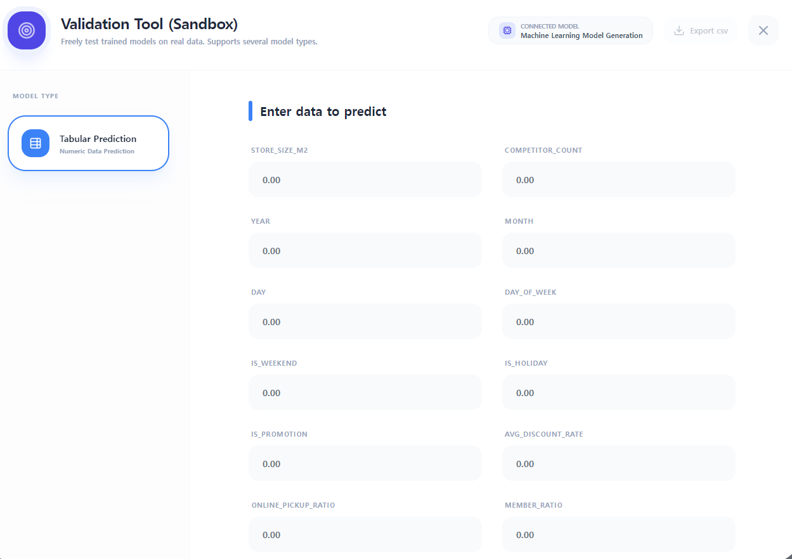
Enter Input Feature Values
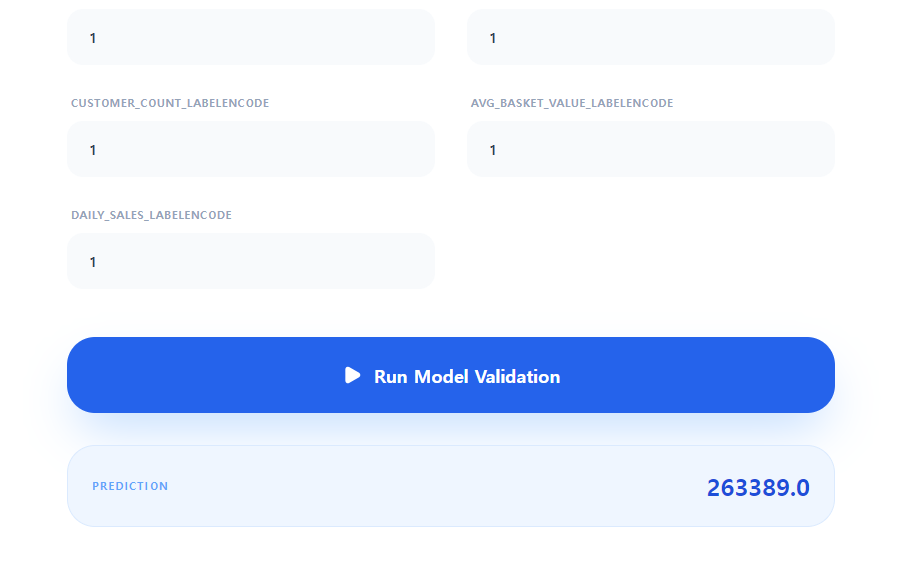
Predicted Output Computed
DATASET
OVERVIEW
7 Categories × 100 Images = 700
Images
실습 2: 차량 7종 이미지 분류 (Computer Vision DL)
Tutorial 2: Vehicle 7-Class Image Classification (Vision DL)
총 700장의 차량 이미지 데이터셋(Vehicles)을 사용하여 지도학습 라벨링, HDC 기반 MobileNetV2 딥러닝
모델 학습, 일괄 추론 및 CSV 리포트 추출까지 완성합니다.
Using a 700-image dataset (Vehicles), perform supervised labeling,
train an HDC-accelerated MobileNetV2 deep learning model, run inference, and export
evaluation CSV reports.
7 Target
Vehicle Classes (각 100장 .jpg)
🛺
Auto Rickshaws
🚲
Bikes
🚗
Cars
🏍️
Motorcycles
✈️
Planes
🚢
Ships
🚆
Trains
01
IMAGE
DATA IMPORT
이미지 데이터셋 폴더 로드 (Data Load)
Load Image Dataset Folder
캔버스에 Data 노드를 추가한 후, Image Data를
선택합니다. [Browse] 버튼을 클릭하여 이미지가 저장된 폴더를 선택하고 [Save &
Run]을 눌러 이미지 데이터를 KASTLE로 로드합니다.
Add a Data node and select Image
Data. Click [Browse] to select the vehicle dataset
directory, then click [Save & Run].
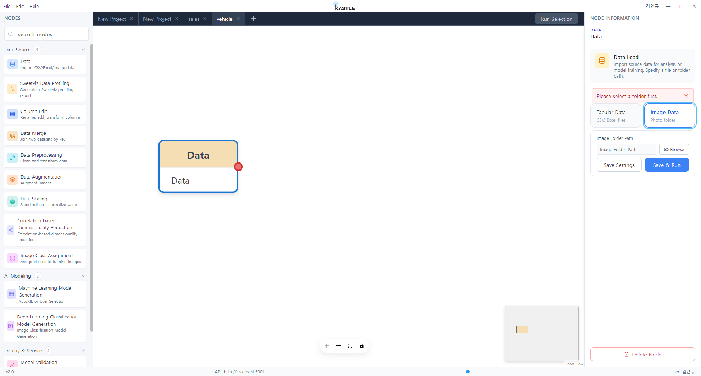
Select Image Data Mode
🔍 Zoom
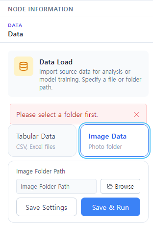
Browse Folder -> [Save & Run]
🔍 Zoom
02
SUPERVISED
LABELING
클래스 정의 및 시각적 라벨링 도구
Image Class Assignment & Visual Labeling
지도학습을 위해 Image Class Assignment 노드를 연결합니다. Class
Management에서 [+] 버튼으로 7개 카테고리를 등록한 뒤, [Open Class
Classification Tool]을 클릭하여 라벨링 화면을 엽니다. Shift나 Ctrl 키를 이용해 여러 장의 이미지를 한
번에 선택하고 우측 Class Picker를 클릭하여 손쉽게 라벨을 부여한 후 [Save Changes]를 누릅니다.
Connect an Image Class Assignment node. Register the
7 categories in Class Management, open the tool, multi-select images with
Shift/Ctrl, assign classes with the Class Picker, and click Save Changes.
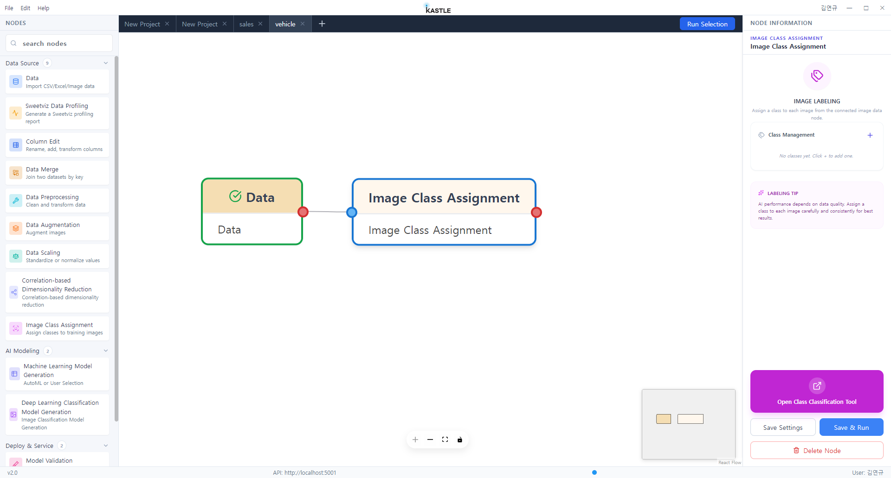
Class Management [+]
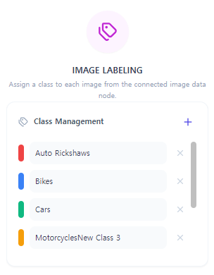
[Open Classification Tool]
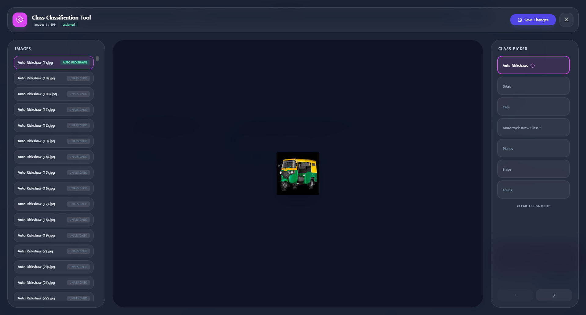
Multi-select with Shift/Ctrl
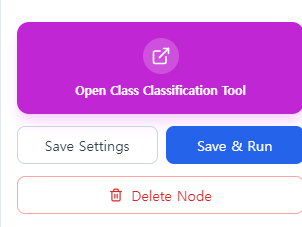
Class Picker & Save
03
HDC
ACCELERATION
딥러닝 모델 생성 (HDC & MobileNetV2)
Deep Learning Model Generation
Deep Learning Classification Model Generation 노드를
연결합니다. KASTLE 2.0의 고유 기술인 HDC(Hyperdimensional Computing) 옵션을 활성화하여
연산 효율과 성능을 극대화하고, CNN 아키텍처로 MobileNetV2를 선택합니다. 학습 Epochs는 5로 설정하고
배치를 기본값으로 둔 뒤 학습을 시작합니다.
Connect a Deep Learning Classification Model Generation
node. Enable HDC (Hyperdimensional Computing), select
MobileNetV2 CNN, set epochs to 5, and execute training.
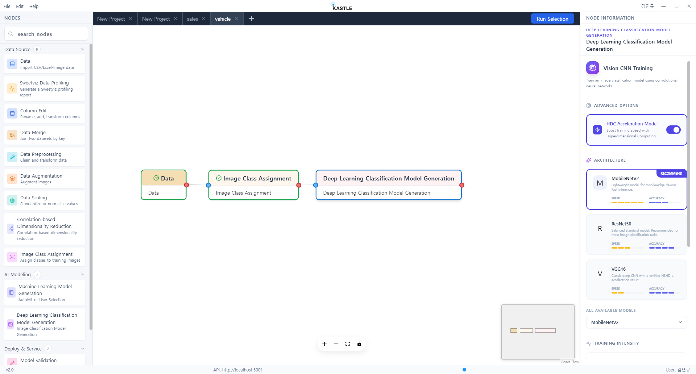
Connect DL Node
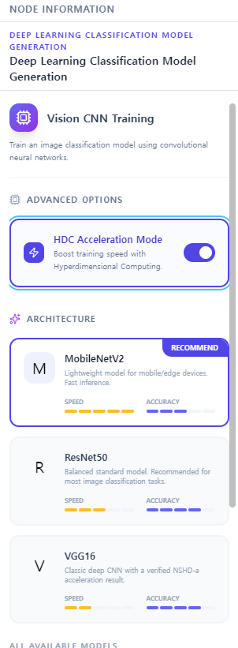
HDC + MobileNetV2
04
& 05
EVALUATION
& CSV EXPORT
이미지 모델 검증, 추론 실행 & CSV 리포트 추출
Model Validation, Batch Inference & CSV Export
Model Validation 노드를 연결하면 Model Type이 자동으로
Image로 설정됩니다. [Open Validation Tool]을 클릭하여 평가 이미지가
위치한 디렉터리를 지정하고 [Run Model Validation]을 누르면 실시간 분류 결과가 카드 형태로 표시됩니다.
우측 상단의 [Export CSV] 버튼을 클릭하여 전체 테스트 세트의 평가 리포트를 스프레드시트 파일로 다운로드할 수
있습니다.
Connect a Model Validation node (defaults to Image).
Click [Open Validation Tool], specify the test image folder, run
evaluation, view predictions, and click [Export CSV] to download
the full benchmark report.
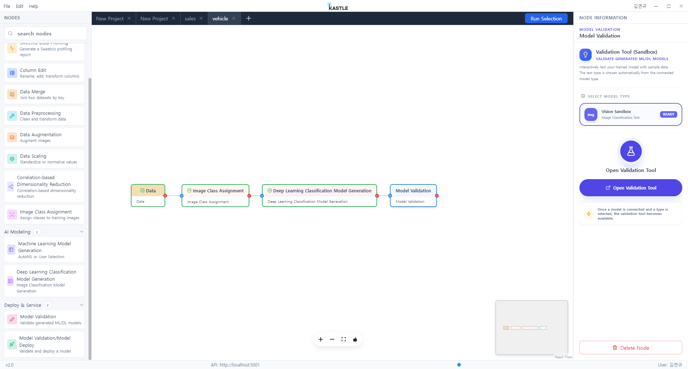
Open Validation Tool
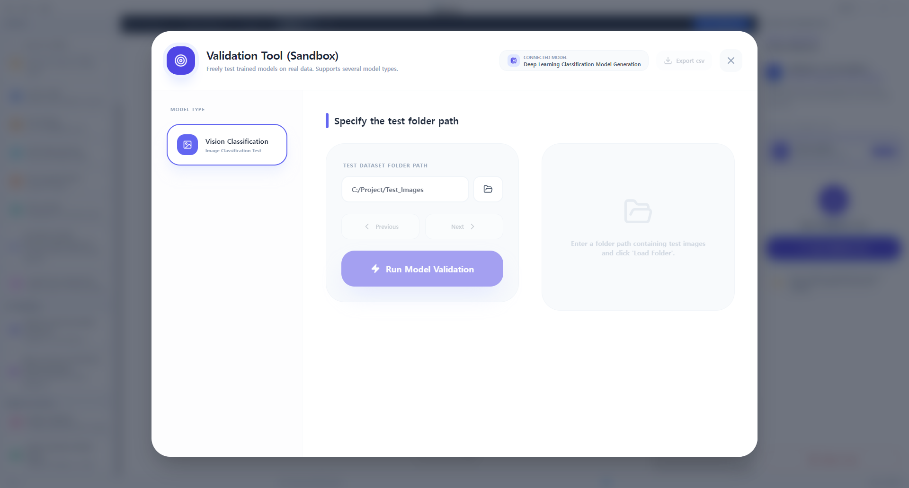
Run Inference Test
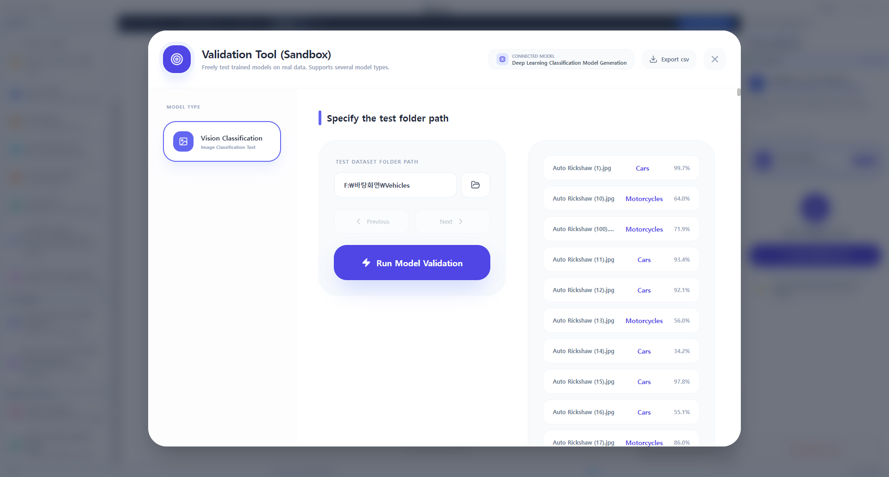
Results & [Export CSV]